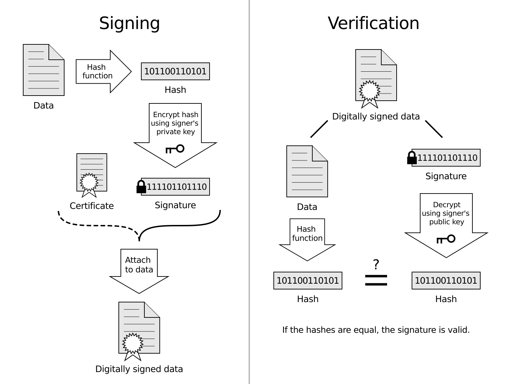

Stablecoin series, part 3: ① Stablecoins × the Data Economy · ② x402 · ③ AP2 (this article)
Executive Summary
For an AI agent to pay, it needs two things. One is an actual way to move the money. The other is proof that the agent really has authority delegated by the user. x402 solved the first. AP2 (Agent Payments Protocol), announced by Google in September 2025, solves the second.
AP2 proves the fact that "this agent may spend this amount, under these conditions, on behalf of this user" through a cryptographically signed digital contract called a Mandate. It is an open standard with more than 60 partners, including American Express, Mastercard, PayPal, Coinbase, Etsy, and Salesforce.
The press frames this as a protocol war — "AP2 vs x402 vs Visa TAP." But it isn't a war. These three standards are a complementary stack, each owning a different layer. This article lays out what that distinction is, and what it means for a data business.
Why Agents Need a New Payment Rail
Today's payment infrastructure is built on a simple assumption. A human clicks "Buy." The browser sends the card details. The processor approves. An AI agent breaks every assumption in that flow.
An agent has no browser. It can't fill in a payment form, can't solve a CAPTCHA, can't click an "I agree" button. It has to compare dozens of stores in seconds, negotiate terms, and execute a purchase without human involvement. It also has to pay other agents for data or compute — thousands of transactions an hour, a few cents each.

But there's a problem beyond simply moving money. When a machine spends on a person's behalf, how does a merchant verify trust? Three core questions arise.
Did the agent actually receive authority from the user to make this specific purchase?
Does the agent's request accurately reflect the user's real intent?
When a bad transaction occurs, how is responsibility determined?
x402 solves payment transmission itself. AP2 solves these three trust problems.
The Core of AP2: The Mandate System
AP2's foundation is the Mandate — a cryptographically signed, tamper-proof digital contract that records, in a verifiable form, the instruction a user gave an agent. Instead of trusting the agent's self-assertion, the merchant confirms the transaction's legitimacy by verifying this mandate.
2.1 Two Types of Mandate
Intent Mandate
Records the user's initial instruction
The contract signed when handing the agent a task. It specifies the allowed scope — brand, category, price ceiling, time conditions.
e.g. "Nike sneakers, under $150,
valid only through tomorrow"
Cart Mandate
Confirms the final purchase
The contract the user (or a delegated agent) signs once the agent has found the actual item. The exact item and price are recorded immutably.
e.g. "Nike Air Max 270,
size 265, $129.99 confirmed"
2.2 Two Shopping Modes
The user says "find me white running shoes" → an Intent Mandate is created → the agent finds and presents options → the user picks the item they want and signs a Cart Mandate → payment executes. "What you see is what you pay" is guaranteed cryptographically.
The user sets it up in advance — "the moment concert tickets drop, buy them, budget $200" → all conditions are specified in the Intent Mandate and signed → when conditions are met the agent automatically generates a Cart Mandate → payment completes with no human present. If the agent tries a purchase outside the conditions, it fails mandate verification.
2.3 The Role of Verifiable Credentials (VC)
Mandates are signed under the Verifiable Credentials (VC) standard. VCs are tamper-proof, non-repudiable, portable digital objects that create an audit trail tracing every step of a transaction — user intent → cart → payment. When a dispute arises, this chain makes responsibility clear.

2.4 A2A and MCP Integration
AP2 is not a standalone protocol. It is designed as an extension of Google's Agent-to-Agent (A2A) protocol and the Model Context Protocol (MCP). If agents already talk over A2A and use tools over MCP, adding AP2 mandates is all it takes to give them payment capability.
AP2 × x402 — Collaboration, Not Rivalry: the A2A x402 Extension
AP2 and x402 solve different problems. So Google and Coinbase chose collaboration over competition.
Erik Reppel, Head of Engineering at Coinbase (Sept 2025)
"x402 and AP2 show that agent-to-agent payments are no longer an experiment. They're becoming part of how developers actually build. Bringing x402 into AP2 to support stablecoin payments was a natural fit."
Alongside the September 2025 AP2 announcement, Google released the A2A x402 extension jointly with Coinbase, the Ethereum Foundation, and MetaMask. It's a structure where x402's stablecoin payments run on top of AP2's mandate system.
What AP2 provides
- • Cryptographic proof that the user granted authority
- • Agent identity verification
- • An audit trail for disputes
- • Support for many payment methods (card, bank, stablecoin)
What x402 provides
- • Actual payment transmission at the HTTP level
- • Instant, account-less payment
- • Microtransaction efficiency
- • Developer-friendly, one-line implementation
Once an AP2 mandate proves "this agent may buy weather data for under $50," x402 sends $0.10 in USDC for each actual API call. The trust layer and the payment layer cooperate while staying separate.
The Truth of the "Protocol War" — It's a Stack, Not a War
Within a 90-day window in early 2026, every major payment platform announced an agent payment standard. The press calls it a protocol war. But the real structure is different.
4.1 Comparing the Four Standards
60+ partners, mandate system, A2A+MCP integration. Payment-method neutral across card, bank, and stablecoin. High complexity but well suited to corporate and enterprise transactions. Mastercard, PayPal, and American Express participate.
HTTP-native, optimized for microtransactions, developer-friendly. Stablecoin (USDC) centric. 100M+ transactions processed. No identity verification — it becomes complete when running on top of AP2.
An approach that layers agent identity onto existing card networks. Proves agent authority with an Agent Identity Certificate. Integrates with Adyen, Stripe, Nuvei. Inherits the limits of existing rails — card fees, settlement delays.
A strategy to be the execution layer no matter which protocol wins. Adds fraud detection, buyer protection, and dispute resolution to agent transactions. Can integrate with AP2, TAP, and x402 alike.
4.2 The Real Structure: A Layered Stack
These standards are not mutually exclusive. AP2's mandate system can carry x402 payment instructions. Visa TAP can approve settlement over a card network or a stablecoin rail. PayPal integrates with any protocol. Google and Coinbase co-releasing the A2A x402 extension is the proof.
The agent payment layered stack
Visa believes the trust layer is the most valuable seat. Google believes the intent layer is the core. Coinbase believes the payment layer will become dominant. PayPal believes the execution layer works on top of any of them. It's not a war — it's a contest to claim the layer each considers most important.
Where Korea Stands — the Opportunity AP2 Brings
No Korean company appears on AP2's list of 60 partners. Ant International (the parent of Alipay) and UnionPay International are there, but they represent China's payment ecosystem. That doesn't mean Korea is irrelevant here.
5.1 KakaoPay's Strategic Position
KakaoPay is a founding member of x402 under the Linux Foundation. AP2 is in formal collaboration with x402. In other words, KakaoPay is indirectly connected to the AP2 ecosystem through x402. If a won-denominated stablecoin is added as an x402 facilitator, a path opens for won payments to be processed on top of AP2.
5.2 The B2B Agent Commerce Opportunity
Gartner predicts that by 2028, 90% of B2B purchasing will be intermediated through AI agents. That market exceeds $15 trillion. If AP2 becomes the trust standard for this B2B agent commerce, Korean companies will need to prepare to access the global AP2 ecosystem.
- • If Korean SaaS and data-API companies add AP2-compatible endpoints, they become targets for automatic purchasing by global AI agents
- • Through Google Cloud Marketplace, agents could auto-purchase software licenses via AP2
- • Once the Digital Asset Basic Act is finalized and a won stablecoin is integrated as an x402 facilitator, direct participation in the AP2 ecosystem becomes possible
DataClinic's Place in the AP2 Economy
If AP2 becomes the trust layer of agent commerce, how can DataClinic position itself in this ecosystem?
6.1 The Delegated-Purchase Scenario
AP2's "delegated purchase mode" creates a direct opportunity for DataClinic. A client's data engineer could set this up:
"For datasets added this week, automatically run a DataClinic diagnosis,
and if the quality score is below 70, also purchase the cleaning service.
Per-call budget cap $20, monthly total $500."
Once this Intent Mandate is signed, the agent pays automatically for every DataClinic API call that meets the conditions. A human doesn't have to approve each time. And because the mandate exists, a clear audit trail is available if a dispute arises.
6.2 Registering in the Agent Marketplace
AP2 connects with the Google AI Agent Marketplace. A2A agents already discover one another over A2A and pay one another over AP2. If DataClinic is registered as an A2A-compatible agent, it becomes an automatically discoverable paid service in this ecosystem.
6.3 The Full-Stack Scenario
A client agent signs an AP2 Intent Mandate → delegates authority to purchase DataClinic diagnoses
The agent requests a diagnosis from the DataClinic MCP server → pays in USDC via x402, or by card
The transaction is recorded as an AP2 Cart Mandate → provides an audit trail for disputes, handled through Stripe/PayPal
About DataClinic
DataClinic is a quality diagnosis service for AI/ML datasets. When AP2's delegated-purchase mode combines with x402's pay-per-query, DataClinic can evolve into a quality-gating service inserted automatically into a company's data pipeline.
Explore DataClinic →